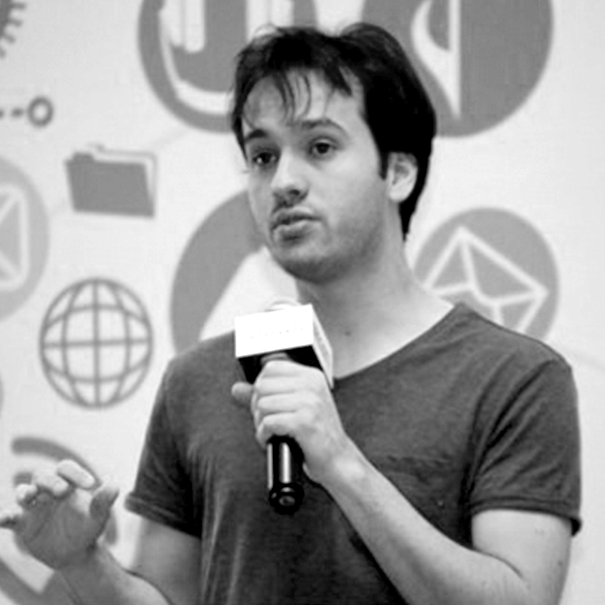
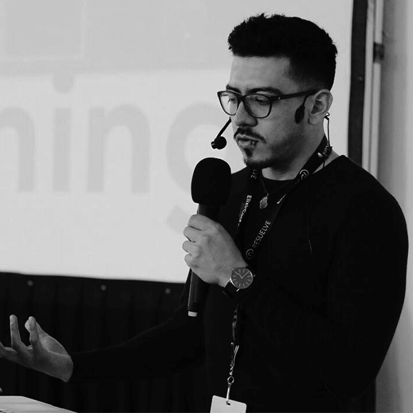
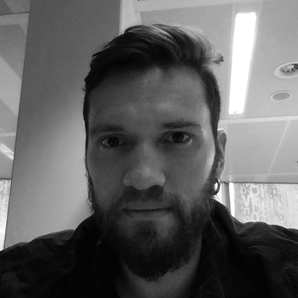

DISCOVER THE FUTURE OF THE ERLANG ECOSYSTEM, IN THE HOME OF ERLANG!
Our speakers
Peter Van Roy
Distributed systems guru
Keynote:
Why time is evil in distributed systems and what to do about it

Ingela Anderton Andin
Top female contributor to Erlang/OTP; SW developer in the OTP team

José Valim
Creator of the Elixir programming language, Chief Adoption Officer at Dashbit
Ayanda Dube
Principal Engineer and RabbitMQ Contributor

Anayeli Malvaez
Backend Developer at SoundTrackYourBrand
Kenji Rikitake
Erlang/OTP rand module co-creator, amateur radio enthusiast

Thomas Arts
Erlang developer since 1997, co-founder and CTO of Quviq
Miriam Pena
Voted one of the women to watch in tech by Women 2.0

Iliia Khaprov
Open source software enthusiast
Opencensus: a stats collection and distributed tracing framework
Jacek Królikowski
Creator of Rexbug and Hoplon, chronic optimiser

Peer Stritzinger
GRiSP Inventor, Distributed Computing in IoT and everywhere
Scott Lystig Fritchie
Stuck in distributed systems tarpits for 30 years
The wide World of almost-Actors: comparing the Pony language to BEAM languages
Dmytro Lytovchenko
Senior developer at Erlang Solutions, refactoring terrible software to be pretty and readable
Hakan Mattsson
Wrote escript, reltool, megaco - attended all EUC's since 1997

Greg Mefford
Maintainer of Spandex, Former Nerves Core Team Member
Continuous tracing in production (without Erlang's trace module)
Guy A. Narboni
Expert systems designer and IoT apprentice maker
From FP to FBP: Synthesizing processing elements for stream computing


Ricardo Corral-Corral
VP of Engineering at Suggestic Inc.
Valentin Micic
Making decent living using Erlang since 2001
Building of distributed time series database - techniques and lessons learned

Thiago Rocha Camargo
XMPP and voice/video specialist, creator of Jingle Nodes and Mobile Platforms
Ibrahim Abdelkareem
Software developer at Asolvi
Building, testing and deploying applications with Docker in Azure
Erik Svensson
Software developer at Asolvi, gets to work with Elixir every day
Building, testing and deploying applications with Docker in Azure
Dániel Szoboszlay
Juggling the data of Europe's biggest fintech unicorn
Useless performance optimisations on the BEAM for fun and... fun?
Martin Sumner
Worked long enough in networks, to always blame the application
Evolution of Riak - discovering and resolving problems in distributed systems

Ricardo Oliveira
Technical lead and senior software engineer @ Talkdesk
Michael Schaefermeyer
Successfully taught Elixir to juniors and built start-ups in it

Martin Gausby
Creator of Tortoise, Elixir lead at Erlang Solutions
Tortoise evolved: the road to MQTT 5 support in the Tortoise MQTT client
Programme Committee

OUR SPONSORS

Silver Sponsor
Media